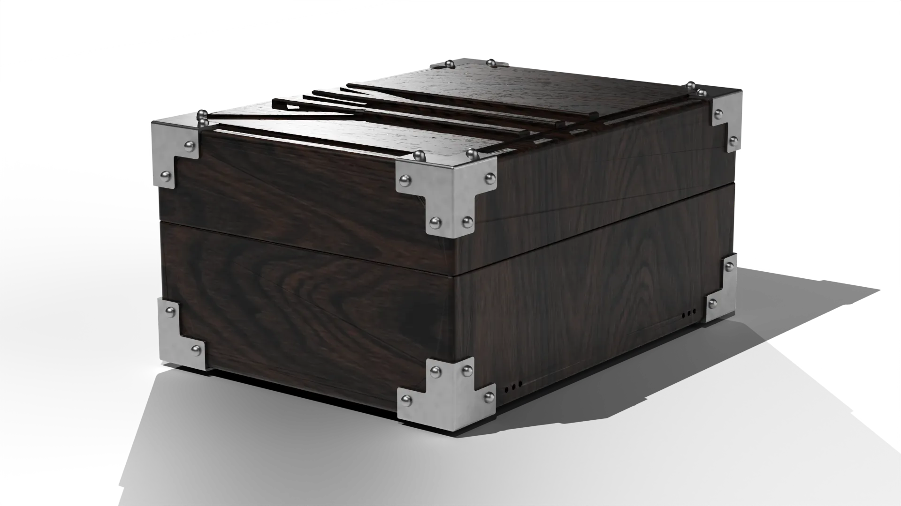
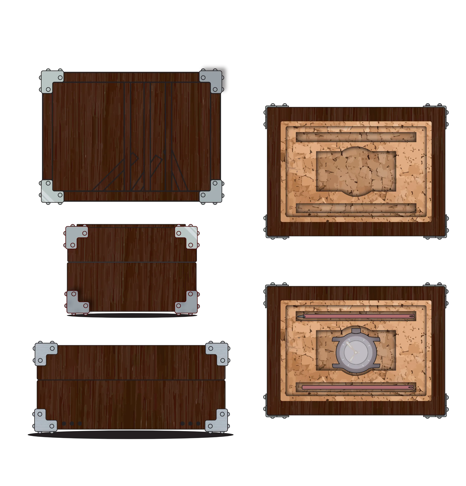
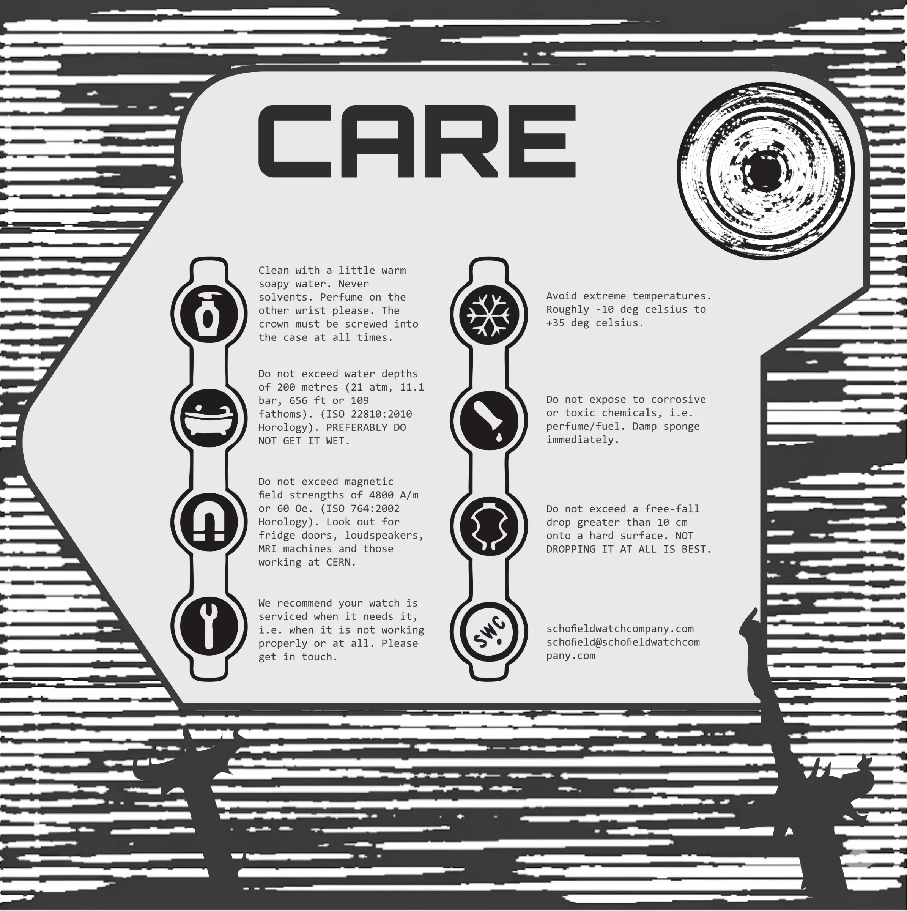
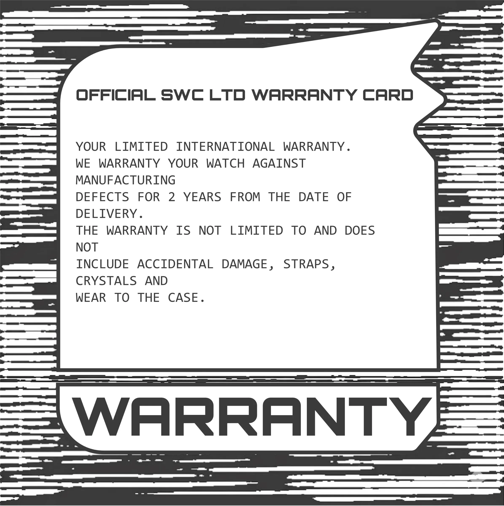
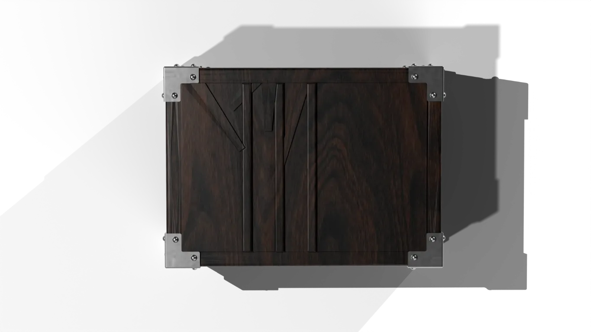

MONTGOMERY
Montgomery is a watch box for Schofield Watch Company that tells the story of the SS Richard Montgomery, a WWII cargo ship that ran aground in the Thames Estuary in 1944 with around 1,400 tons of munitions still in her holds.
Design a generic watch box for Schofield Watch Company, including the cards inside and the outer packaging. It must sit within a £110 budget, in line with the average Schofield box, be manufacturable and be backed by an in-depth PDS.



Schofield was founded in 2008 by Giles Ellis and makes small-batch, high-quality British watches in Sussex. Every touchpoint is designed, from the watches and straps to the packaging, graphics and photography, and each box is meant to feel like opening the first chapter of a story.
Schofield has no fixed Pantone, and if there is a sustainable UK-sourced material, the box must use it. My first concepts overlapped too much with boxes Schofield already makes, so I turned to a story of my own. I grew up on the Isle of Sheppey, where the Montgomery's masts have stood above the water for 80 years, and its story has been largely untouched.


The box is a copy of a sealed object said to have been recovered from the wreck in 1962. It mirrors WWII military transit crates: L-shaped steel corner guards and dome rivets copy the reinforcements that stopped 1940s supply trunks from splitting, with a split-line closure and ventilation holes along the base. The real mystery is the lid, which is carved with a picture of the wreck, even though the box was loaded as cargo before the ship went down.

Material choice decided whether this felt like a luxury watch box or a washed-up piece of military kit. Fumed dark oak gives the rugged character of an ammunition chest while staying affordable and FSC-sourced, and the fuming takes the colour deep into the wood so it wears like real field gear. Brushed steel hardware adds a sharp contrast and mirrors the machining of the watch inside.
Inside, a raw cork bed replaces velvet and foam. Cork is inert, keeps its spring for decades and can carry a printed batch serial number, so the interior reads like issued operational gear. The watch is packed as three separate pieces that are put together on arrival.